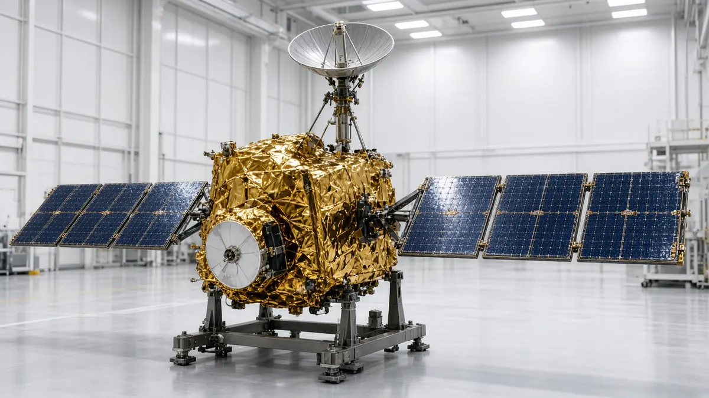

Sources linked. Allegations are labelled as allegations. Verify with the original source.
⏱️
🚀 Science › Daylight saving time ends Nov 1, 2026
Daylight saving time ends Nov 1, 2026

By The Trends Incoming team
Clocks fall back one hour at 2 a.m. local time on Sunday, Nov 1, 2026, in most of the US and Canada. Who changes, who doesn't, when DST returns and where the Sunshine Protection Act stands.
What's trending in Daylight saving time ends Nov 1, 2026
Clocks fall back Sunday
Daylight saving time ends Sun Nov 1 at 2 a.m. local. Hawaii and most of Arizona don't change. DST returns Mar 14, 2027.
The quick version
Daylight saving time ends on Sunday, November 1, 2026, at 2 a.m. local time. Clocks go back one hour to 1 a.m., so you get an extra hour of sleep and darker evenings. Daylight saving time ran 238 days this year, NIST says, and it starts again on Sunday, March 14, 2027, per timeanddate.
| Fall back | Sun Nov 1, 2026, 2 a.m. local, clocks go to 1 a.m. |
|---|---|
| Spring forward | Sun Mar 14, 2027 |
| DST length in 2026 | 238 days (NIST) |
| No change | Hawaii, most of Arizona (the Navajo Nation does observe DST) and US territories (NIST) |
| Canada exceptions | Yukon, British Columbia, Alberta and Manitoba, per timeanddate (see note) |
| Europe | Already changed on Sun Oct 25 |
| Sunshine Protection Act | Passed the House 308-117 on July 14, 2026; pending in the Senate (timeanddate) |
Do I need to change my clocks?
Phones, laptops and most smart devices update on their own. Ovens, microwaves, car dashboards and wall clocks usually don't, so change those Saturday night or Sunday morning. It's also a handy reminder to test your smoke alarm batteries.
Why it's trending
The time change always spikes searches the week before, and this year there's extra interest because the House passed the Sunshine Protection Act, which would make daylight saving time permanent, 308-117 on July 14, 2026, timeanddate reports. The Senate has not passed it, so clocks still change this Sunday.
A note on Canada: timeanddate lists Yukon, British Columbia, Alberta and Manitoba as not changing this fall. Rules there have been in flux, so check your provincial government if you live there.
Keep reading
- Fall back explained
- Halloween costumes 2026 (the night before)
- Election Day and early voting
- Weather this week
Follow the conversation
Quick answers
When does daylight saving time end in 2026?
Sunday, November 1, 2026, at 2 a.m. local time, when clocks go back to 1 a.m.
Do we gain or lose an hour on November 1?
You gain an hour. Clocks go back from 2 a.m. to 1 a.m.
When does daylight saving time start again?
Sunday, March 14, 2027.
Which states don't change their clocks?
Hawaii and most of Arizona stay on standard time all year, per NIST. The Navajo Nation in Arizona does observe DST. US territories don't change either.
Is daylight saving time becoming permanent?
Not yet. The House passed the Sunshine Protection Act 308-117 on July 14, 2026, but the Senate has not, so clocks still change on November 1.
Related in Holidays and Observances
- Tue Oct 27, 2026 Israel election 2026
Israel votes Oct 27: final polls and the 61-seat math, neutral. - Fri Oct 30, 2026 Hallmark Christmas movies 2026 schedule
All 34 new Countdown to Christmas premieres, Fri, Sat and Sun at 8/7c through Dec 20. - Sat Oct 31, 2026 Halloween costumes 2026
The costumes everyone is searching for this year. - Tue Nov 3, 2026 Election Day and early voting 2026
How early voting works before Election Day on Nov 3. - Wed Nov 11, 2026 Veterans Day free meals and deals
Verified Veterans Day 2026 offers from restaurants and stores. - Fri Dec 4, 2026 When is Hanukkah 2026
Starts at sundown Fri Dec 4, ends Sat Dec 12, with a night-by-night candle chart.